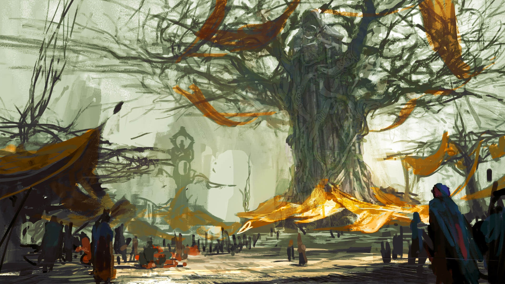

← 버전 모음
이미지 출처: Riot Games
HIDDEN SUMMONERS
숨어 사는 소환사들
리그 오브 레전드 IP 확장 제안 · 게임기획 포트폴리오
한 판을 하지 않아도,
머물 이유가 있는 LoL
스크롤하면 그림 속으로 들어갑니다 ↓
PART 02 · 아이오니아 초원

PART 02 · 아이오니아 초원
탁 트인 쉼터를 세운다
전쟁의 학회가 사라진 뒤,
소환사들은 숨어 살았다
신들처럼 몰래 도시에 섞여 산다.
주민은 그들의 정체를 모른다.
옛 설정
전쟁 대신 전장
분쟁을 협곡 승부로 결정 → 공식 설정에서 삭제
→
이 기획
숨은 학회들의 승부
도시별 학회가 협곡에서 겨룸 → 도시의 운명
왜 세계관을 이렇게 잡았나
시안 1 · 그림 속 글귀 방식 (표지 · 세계관 두 장면)
본 기획서는 라이엇 게임즈와 무관한 개인 기획안이며, 수록된 룬테라 이미지의 저작권은 Riot Games에 있습니다.
×
왜 세계관을 이렇게 잡았나
빈자리를 채운다
: 초창기 LoL에는 "나라들이 전쟁 대신 정의의 전장에서 분쟁을 결정하고, 소환사가 챔피언을 불러 싸운다"는 설정이 있었습니다. 지금 공식 이야기에서는 빠져 있어서, 협곡에서 왜 싸우는지에 대한 답이 비어 있습니다.
숨어 산다 = 공식 설정과 충돌하지 않는다
: 소환사는 룬테라 주민에게 정체를 드러내지 않습니다. 그래서 공식 이야기 속 인물과 사건을 하나도 바꾸지 않고 그 옆에 덧붙일 수 있습니다.
유저 = 소환사
: 플레이어는 원래 "소환사"라고 불립니다. 이 호칭에 몸(광장의 아바타)과 소속(학회)을 붙여 주는 것뿐이라, 새로 배울 설정이 거의 없습니다.
이길 이유가 설정에서 나온다
: 협곡의 승부가 내가 사는 도시의 분쟁 방향을 정한다는 설정 덕분에, 보상을 덧붙이지 않아도 이길 이유가 생깁니다. 월드컵처럼 직접 뛰지 않는 날에도 "우리 도시의 승부"가 됩니다.
룬테라 지역·도시 이름은 공식 설정을 그대로 쓰고, 소환사와 학회만 이 기획의 해석입니다.